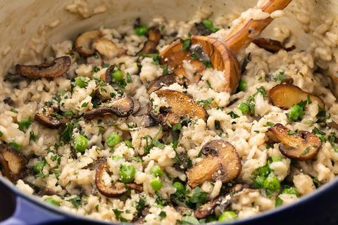

Mushroom Risotto

Warm, cozy, flavoured, and creamy...What else are you looking for in a dish?
Mushroom Risotto, a perfect dinner for all seasons! Especially the cold ones :) Let's see how to make it!
Ingredients
(for 6 servings)
- Chicken/Vegetables broth, 6 cups
- 3 tbsp olive oil
- 1 pound Portobello mushroom, sliced
- 1 pound white mushrooms
- 2 medium shallots
- 2 cups risotto rice
- 1/2 cup white wine
- 4 tbsp butter
- 3 tbsp chives, chopped
- 1/2 cup Parmesan cheese
- sea salt, black pepper
Instructions
- Warm broth with low heat
- Warm 2 tbsp olive oil in saucepan; add the mushrooms and cook until soft; remove them and set aside
- Add the left olive oil to saucepan, stir the shallots, cook for a minute
- Add rice, and cook until golden in color (it should take a couple of minutes)
- Pour wine, and let it be abosrbed by the rice
- Add 1/2 cup broth, stir until absorbed
- Continue adding broth constantly until the liquid is absorbed and rice is tender (approx. 20 minutes)
- Remove rice from the heat; stir in the mushrooms and their liquid, butter, chives and parmesan
- Season with salt and pepper and serve immediately
Enjoy your risotto!